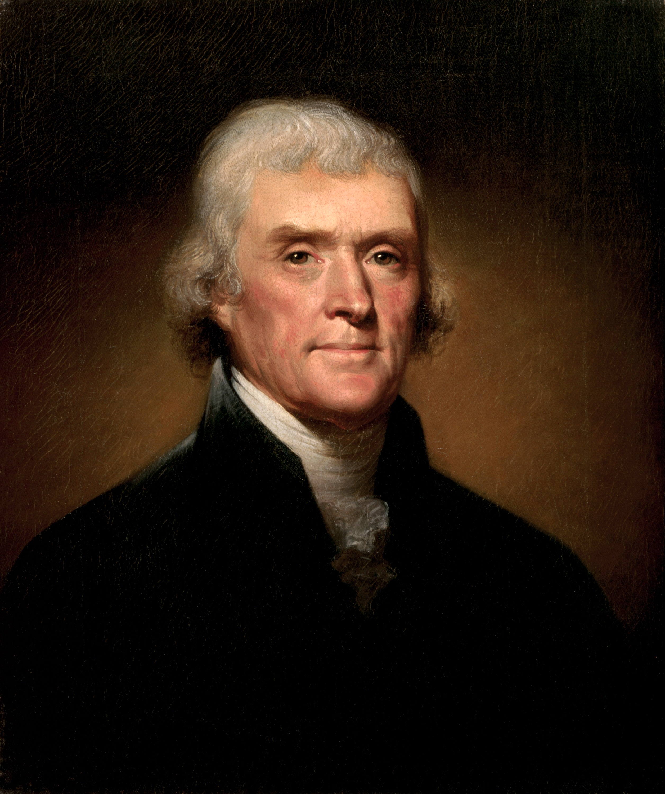
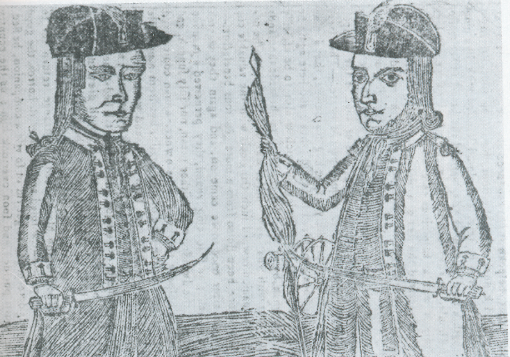

Directions: Work through the five stations in order. Each station holds one record of the Confederation era, quoted from the edition named in its Source line, with cuts marked by ellipses, or labeled as a teaching summary where the record is presented in that form. As you work, keep the ledger in Part 2: for each record, enter what the Confederation era could do and what it could not do. At the end, judge whether the Articles were a failure, an unfinished draft, or a government overtaken by a job it was never given the tools for, and defend the judgment from the documents.
Source: Second Continental Congress, Articles of Confederation, 1777, as carried in the audited source record (edition named in the record: Road to the Civil War). Congress adopted the Articles on November 15, 1777; Maryland's signature completed ratification in March 1781. Spelling follows the record. Cuts are marked by ellipses.

Article II. "Each state retains its sovereignty, freedom and independence, and every Power, Jurisdiction and right, which is not by this confederation expressly delegated to the United States, in Congress assembled."
Article III. "The said states hereby severally enter into a firm league of friendship with each other, for their common defence, the security of their Liberties, and their mutual and general welfare, binding themselves to assist each other, against all force offered to, or attacks made upon them, or any of them, on account of religion, sovereignty, trade, or any other pretence whatever."
Article VIII, on paying for the union. "All charges of war, and all other expenses that shall be incurred for the common defence or general welfare, and allowed by the united states in congress assembled, shall be defrayed out of a common treasury, which shall be supplied by the several states, in proportion to the value of all land within each state ... The taxes for paying that proportion shall be laid and levied by the authority and direction of the legislatures of the several states within the time agreed upon by the united states in congress assembled."
Article XIII, on changing the design. "... nor shall any alteration at any time hereafter be made in any of them, unless such alteration be agreed to in a congress of the united states, and be afterwards confirmed by the legislatures of every state."
State what kind of union Articles II and III create, how Article VIII pays for it, and what Article XIII requires to fix any defect in the design. Then enter in the ledger what this record shows the era could and could not do.
Source: Northwest Ordinance, July 13, 1787, Avalon Project, Yale Law School (transcription from Documents Illustrative of the Formation of the Union of the American States, Government Printing Office, 1927). The ordinance governed the territory northwest of the Ohio River. Spelling follows the transcription. Cuts are marked by ellipses.

Article 1. "No person, demeaning himself in a peaceable and orderly manner, shall ever be molested on account of his mode of worship or religious sentiments, in the said territory."
Article 3. "Religion, morality, and knowledge, being necessary to good government and the happiness of mankind, schools and the means of education shall forever be encouraged. The utmost good faith shall always be observed towards the Indians; their lands and property shall never be taken from them without their consent ..."
Article 5. "... whenever any of the said States shall have sixty thousand free inhabitants therein, such State shall be admitted, by its delegates, into the Congress of the United States, on an equal footing with the original States in all respects whatever, and shall be at liberty to form a permanent constitution and State government ..."
Article 6. "There shall be neither slavery nor involuntary servitude in the said territory, otherwise than in the punishment of crimes whereof the party shall have been duly convicted: Provided, always, That any person escaping into the same, from whom labor or service is lawfully claimed in any one of the original States, such fugitive may be lawfully reclaimed and conveyed to the person claiming his or her labor or service as aforesaid."
State three things this one law did for the territory, and then state the two qualifications inside it: what Article 3 promised Native peoples, in a territory being opened to settlement, and what Article 6's proviso preserved. Then enter in the ledger what this record shows the era could and could not do.
Source: Virginia General Assembly, Virginia Statute for Religious Freedom, January 16, 1786, as carried in the audited source record (edition named in the record: Code of Virginia). Thomas Jefferson drafted the statute in 1777; James Madison carried it through the Assembly in 1786, disestablishing the Anglican Church in Virginia. Spelling follows the record. Cuts are marked by ellipses.

"... that to compel a man to furnish contributions of money for the propagation of opinions which he disbelieves, is sinful and tyrannical; ..."
"... that our civil rights have no dependence on our religious opinions any more than our opinions in physics or geometry; ..."
"Be it enacted by the General Assembly, That no man shall be compelled to frequent or support any religious worship, place or ministry whatsoever, nor shall be enforced, restrained, molested or burthened, in his body or goods, nor shall otherwise suffer on account of his religious opinions or belief; but that all men shall be free to profess, and by argument to maintain, their opinions in matters of religion, and that the same shall in no wise diminish, enlarge or affect their civil capacities."
State what the statute forbids government to do, what it protects, and why a state legislature's religious law belongs in a file about the Confederation Congress's decade. Then enter in the ledger what this record shows the era could and could not do.
Source: George Washington, letter to John Francis Mercer, September 9, 1786, as carried in the audited source record (Founders Online, National Archives). Mercer had proposed paying a debt owed to Washington partly with enslaved people. Washington himself held people in slavery at Mount Vernon. Spelling follows the record. Cuts are marked by ellipses.
"With respect to the first, I never mean (unless some particular circumstances should compel me to it) to possess another slave by purchase; it being among my first wishes to see some plan adopted, by the legislature by which slavery in this Country may be abolished by slow, sure, & imperceptable degrees."
Later in the same letter, listing his own pressing debts, Washington wrote: "One of which, if there is no other resource, I must sell Land or Negroes to discharge."
State the wish Washington declares, the condition he attaches to his refusal to buy, and what the second passage shows about the distance between the wish and his practice. Then enter in the ledger what this record shows the era could and could not do.
Source: Teaching summary written for this lesson from the public record, labeled as a summary. No sentence in this station is presented as a period quotation.

Massachusetts came out of the war owing soldiers and lenders, and it chose to pay its debts in full, with taxes levied in hard money. Western farmers had little coin. Certificates many soldiers had sold cheaply to speculators were now claims the state taxed everyone to honor. Farmers facing foreclosure and debtors' prison petitioned first, then organized. From late August 1786, crowds calling themselves Regulators, many of them Continental veterans, closed the courts at Northampton, Worcester, Springfield, and other towns so that no foreclosure judgments could be entered. Daniel Shays, a farmer who had been a captain at Bunker Hill and Saratoga, became the movement's best known leader. The state had no money of its own ready for a force, and Congress could neither supply troops nor pay for any. Boston merchants raised a private subscription to finance a militia, which marched west in January 1787. At the Springfield arsenal on January 25, the militia fired on the advancing Regulators and four men died. By February the movement was scattered. The legislature that year eased the taxes, and the voters turned Governor Bowdoin out of office. The grievances were partly answered by the state itself, after the shooting.
State the chain from the state's tax choice to the court closings, who paid for the force that ended the rebellion and why that detail belongs in a file about Congress, and what Massachusetts did after the rebellion was broken. Then enter in the ledger what this record shows the era could and could not do.
| Station | What the era could do | What it could not do |
|---|---|---|
| 1. The Articles | ||
| 2. Northwest Ordinance | ||
| 3. Virginia Statute | ||
| 4. Washington's letter | ||
| 5. Shays's Rebellion |
Were the Articles a failure, an unfinished draft, or a government overtaken by a job it was never given the tools for? Answer in a developed paragraph. Use at least three stations, weigh one achievement at full value against one failure, and answer the strongest claim for a different verdict in one or two sentences.
Station 1. The union Articles II and III create is a league, not a nation: each state retains its sovereignty, freedom, and independence and every power not expressly delegated, and the states enter a firm league of friendship for common defence and mutual welfare. Article VIII pays for that union by asking: the common treasury is supplied by the states in proportion to their land values, and the taxes themselves are laid and levied by the state legislatures, so Congress holds a claim on state goodwill and nothing else. Article XIII makes the design self locking: no alteration is valid unless Congress agrees and the legislatures of every state confirm it, which is why a single defect, the missing tax power, could not be repaired from inside the system. Could do: hold a war coalition together, make treaties, and legislate for a national domain. Could not do: raise a dollar or compel a state. (Blueprint 11)
Station 2. Three things the ordinance did: it guaranteed freedom of worship in the territory (Article 1), it committed the territory to schools and education (Article 3), it set a population path, sixty thousand free inhabitants, to statehood on an equal footing with the original states (Article 5), and it barred slavery and involuntary servitude in the whole territory (Article 6); any three earn credit. The qualifications: Article 3's utmost good faith clause promised that Native lands and property would never be taken without consent, a promise written into a document whose purpose was to organize the settlement of that same land, and the era's later record broke it. Article 6's proviso preserved the slaveholder's claim inside the free territory itself: a person escaping into the territory from whom labor was lawfully claimed in an original state could be lawfully reclaimed and returned. Could do: write a constitution for an empire of new states, with liberties and a slavery bar ahead of the federal Constitution. Could not do: make its own good faith clause or its freedom clause whole. (Blueprint 12)
Station 3. The statute forbids government to compel any man to frequent or support any religious worship or ministry, and to burden him in body or goods, or otherwise make him suffer, on account of his religious opinions or belief. It protects the free profession and argument of religious opinion and declares that such opinion shall in no wise diminish, enlarge, or affect a man's civil capacities; its argument adds that compelling contributions for opinions a man disbelieves is sinful and tyrannical, and that civil rights have no dependence on religious opinions any more than on opinions in physics or geometry. Why it belongs in this file: the founding of the 1780s happened in the state legislatures as well as in Congress, and this statute, drafted by Jefferson in 1777 and carried by Madison in 1786, is the decade legislating at founding level on a subject Congress had no power to touch at all. Could do: disestablish a church and write religious freedom into law as a natural right. Could not do: Congress could not have passed it; the achievement belongs to a state, which is itself the lesson about where power lived under the Articles. (Blueprint 12)
Station 4. Washington declares that he never means to possess another enslaved person by purchase, and that it is among his first wishes to see a plan adopted by the legislature by which slavery in this country may be abolished by slow, sure, and imperceptible degrees. The condition sits inside the refusal: unless some particular circumstances should compel him to it. The second passage closes the distance question from the other side: pressed by his own debts in the same letter, Washington lists selling land or enslaved people as the resource he would use if no other resource served. The wish was private, conditional, and deferred to a legislature and to slow degrees; the practice, holding and potentially selling people, was present and his. Could do: the era's most respected man could state abolition as a first wish in 1786. Could not do: neither he nor the Confederation turned the wish into an act, and the Northwest Ordinance's slavery bar, Station 2, is the era's one structural move against the institution. (Blueprint 12)
Station 5. The chain: Massachusetts taxed in hard money to pay its war debts in full, including certificates speculators had bought cheaply from soldiers; western farmers without coin faced foreclosure and debtors' prison; petitions failed; from August 1786 the Regulators closed the courts at Northampton, Worcester, and Springfield to stop foreclosure judgments. The force that ended it was a militia financed by private subscription among Boston merchants, and that detail belongs in a file about Congress because the national government could neither supply troops nor pay for any: the union's most alarming domestic crisis was put down with private money. At the Springfield arsenal on January 25, 1787, four men died. Afterward the state itself answered part of the grievance: the legislature eased the taxes and the voters turned Governor Bowdoin out. Could do: a state could still govern, tax, fight, and relent. Could not do: Congress could only watch, which is what the men who met at Annapolis that September and Philadelphia the next May had seen. (Blueprint 11)
The verdict. Full credit requires a judgment, three stations used accurately, one achievement weighed at full value, and a rival verdict answered. The failure case: Article VIII's requisition system starved the treasury, Article XIII made repair require unanimity, the treaty went unenforced, and in the Shays crisis the union's part was played by a privately financed state militia (Stations 1 and 5). The unfinished draft case: the same Congress wrote the Northwest Ordinance, a working constitution for new states with a slavery bar (Station 2), and the era's legislatures produced the Virginia Statute (Station 3), work no failed government writes; but a draft is judged by whether it can be finished, and Article XIII's unanimity rule meant this one could only be replaced, not revised, which is what Philadelphia did. The overtaken case: the Articles were built for a league that would make war and peace and little else, and the 1780s handed the union a debt, a domain, a trade system, and a domestic insurgency, jobs the design had deliberately withheld the tools for. The strongest answers usually land on the third verdict with the second's evidence inside it, and they note Station 4 as the era in miniature: first wishes everywhere, instruments nowhere.